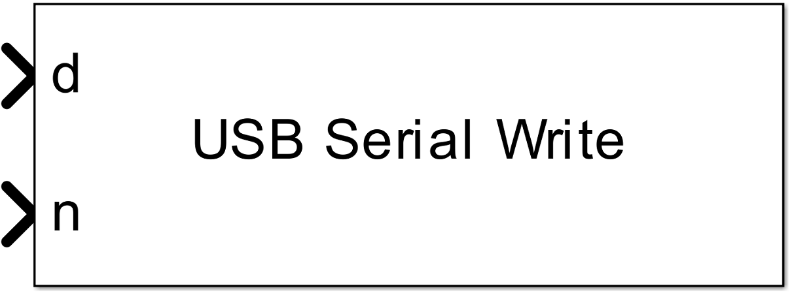
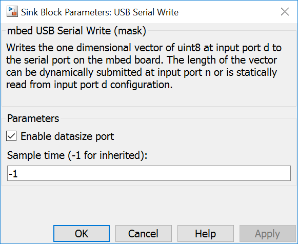
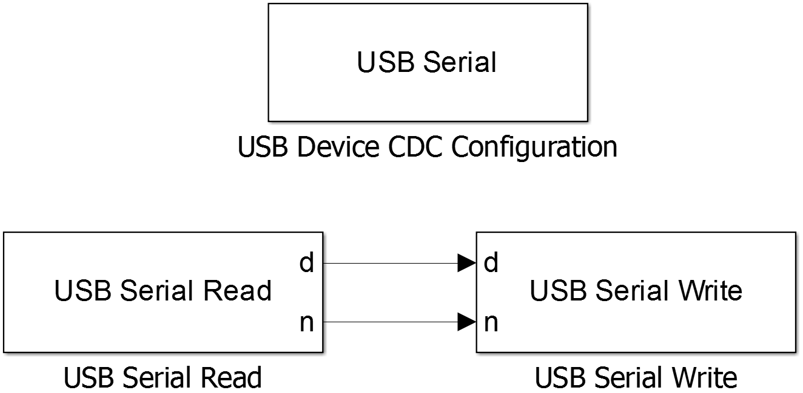

5.2.3. USB CDC Write Block
5.2.3.1. Description
Writes the one dimensional vector of uint8 at input port d to the USB CDC device driver. The length of the vector can be dynamically submitted at input port n or is statically read from input port d configuration.
Please be aware that not every target supports the mbed USB library. Maybe the mcu does not support USB or the mbed USB library is not supported.
{kind=link}
5.2.3.2. Data Type Support
The input port d expects an uint8 data type and input port n expects an uint32 data type
5.2.3.3. Parameters Dialog Box
Enable datasize Port
When this check box is checked the optional input port n is enabled.
Sample Time
specifies the time interval between samples. To inherit the sample time, set this parameter to -1.
5.2.3.4. Example
In the example data read from USB CDC driver input are written back to the USB CDC driver output without modification.
{kind=link}
5.2.3.5. Code Generation
Global parts
creates one line in void <Model Name>_step(void) function
usbSerial.writeBlock((uint8_T*)pointer_to_data, length_of_data); // length_of_data is initialised with the dimension of the input signal or with n
in <Model Name>.cpp.